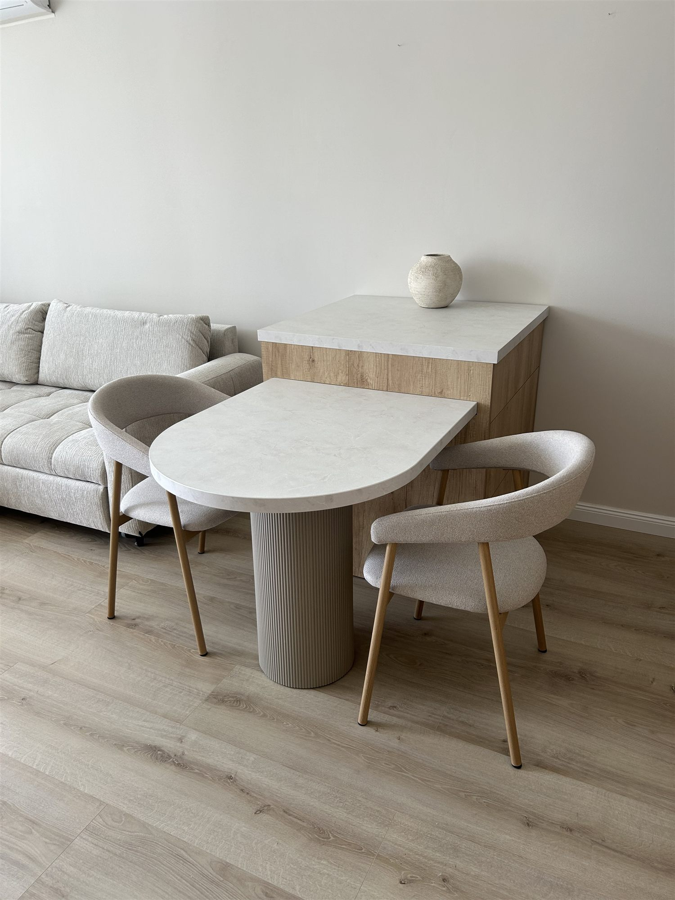
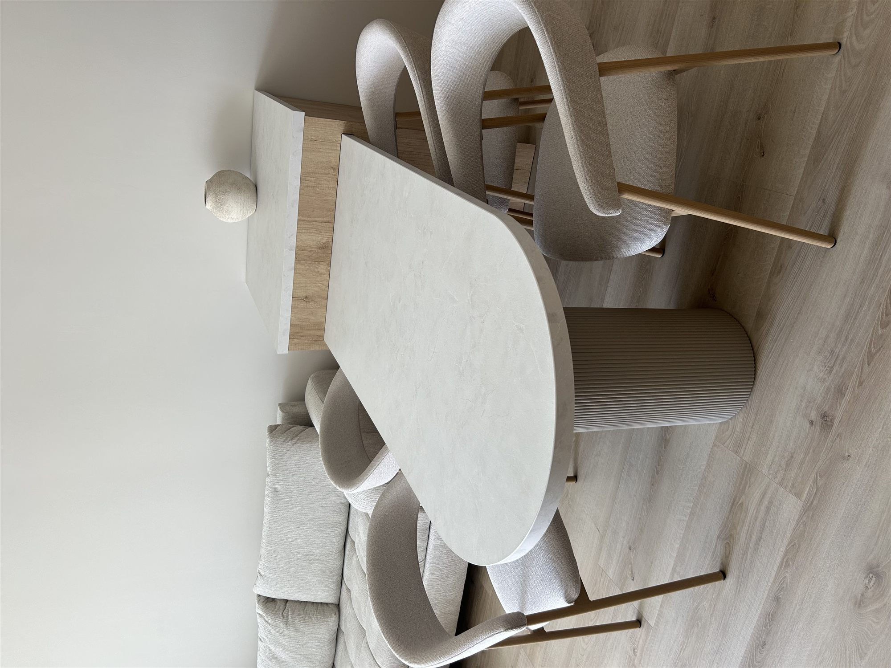

Erényi Bútor · Állandó termékek
Kedvenc bútortervünk most már állandó kínálatban
Egyedi bútorok készítésével foglalkozunk Budaörsön – de a legszeretettebb darabjainkat mostantól állandó termékként is megrendelheted, a saját ízlésed szerinti színekben és méretben. Válassz dekort, nézd meg azonnal a bútorodon, és egy kattintással árajánlatot is kérhetsz.

Hogyan működik
Egyedi minőség, állandó termékként
Ugyanazzal a kézműves gondossággal készül, mint bármelyik egyedi megbízásunk – csak a tervezést már elvégeztük helyetted.
Válassz terméket
Nézd át állandó kínálatunkat – elsőként a kihúzható asztallal rendelkező konyhaszigetet.
Állítsd be a színeket
Munkalap, asztallap, bútorszín, henger láb – válassz EGGER dekorokból, és azonnal lásd is a változást.
Add meg a méretet
Néhány bevált méret közül választhatsz, vagy kérheted egyedi méretre szabva is.
Kérj árajánlatot
Egy kattintással elküldjük neked a teljes konfigurációt – innen ugyanaz a folyamat indul, mint egy egyedi megbízásnál.
Állandó kínálat
Termékeink
Az első állandó termékünk már konfigurálható. A következő darabok hamarosan csatlakoznak a kínálathoz.
Erényi Gergely
Asztalos és közgazdász – 20+ év tapasztalattal
Eleinte hobbiként készítettem bútorokat magamnak és barátaimnak, mára teljes időben ennek szentelem a munkámat budaörsi műhelyemben. A nemzetközi projektvezetésben szerzett tapasztalatom segít abban, hogy a beszállítókkal és más szakemberekkel zökkenőmentesen együtt tudjak dolgozni – és hogy pontosan megértsem, mire van szükséged.
„Gergővel lassan három éve dolgozunk együtt… Igényes, pontos, a határidőkben is a megállapodás szerint szállít.” — Farkas Imre, polgármester
Teljes portfólió és vélemények →